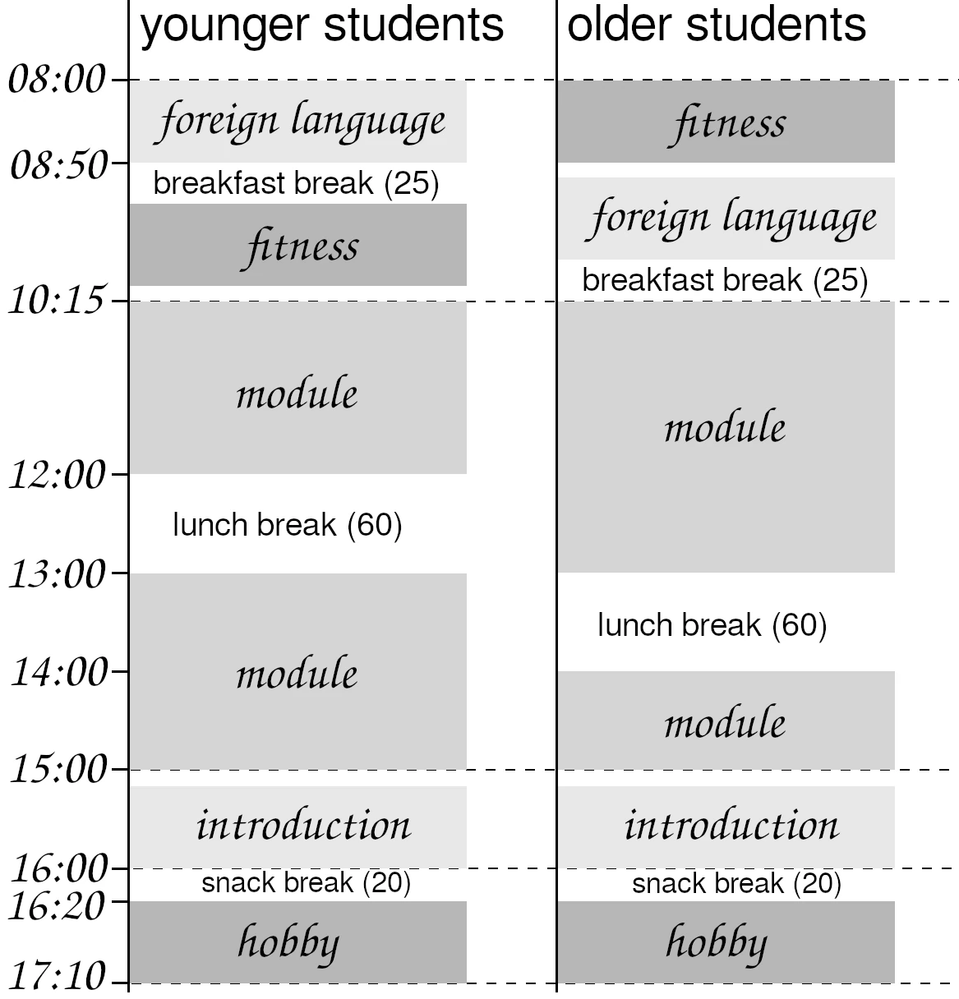

7. Education System
7.2 School
Let's start by setting a framework. Of course, I can only present a specific school of a specific size here. I think, however, that if at all possible, schools in our society should actually be all this big, or only slightly bigger. If they are smaller, they would only be able to offer a portion of the curriculum (since they have fewer teachers). If they are much larger, splitting them into multiple schools would be better to shorten the students' commutes. Furthermore, the larger the school, the more the students become an anonymous mass – therefore, limiting its size is desirable.
If all schools are supposed to be the same size anyway, what's stopping us from simply constructing all school buildings according to the same blueprint? What disadvantages could arise from that?
• This way, children who move find themselves in a similar building in the new location. I don't see why that would be a disadvantage.
• The school building will be freestanding. Whether it blends in seamlessly into a row of houses is therefore irrelevant.
• We won't run into problems with a monoculture like a spruce forest getting destroyed by bark beetles.
If, on the other hand, all school buildings are built the same, then significant efficiency gains can be achieved in planning, construction, furnishing, and repair. Unless the building plan has evolved, or there are urban planning or safety concerns, I therefore advocate for building all newly constructed school buildings as identically as possible for reasons of efficiency (see Chapter 13.3.3).
How big should the school be? How many students, how many teachers?
The size of the entire school depends on how many parallel classes it has and, consequently, how many students each year group comprises. I think five parallel classes are clearly the best. Then a resource that only exists once can be used by each parallel class one day a week (at the same time).
With 5 parallel classes and 20 students per class, the year group size is 100 students.
My design is based on 10 school years per student (children aged 6-16 years), so the whole school educates 10 × 100 = 1,000 students.46 If, in the end, 8 or 12 years of schooling prove to be better, this will be easily adaptable. An even number of school years is desirable; otherwise, some considerations would look different.
Since we want class sizes to remain the same in the later school years, 10 teachers per school year are needed (two per class). For 10 school years, that's 100 teachers for the entire school.47
A few remarks about the school building itself. Of course, it must be sufficiently large. If we have 50 classes being taught at the same time, then the building must also have at least 50 rooms for that purpose. The building must be freestanding, with windows facing all directions, and surrounded by a sufficiently large area of land. During breaks, students should be able to get some fresh air and also have enough space outside to move around. Some school activities will also take place outdoors, so there must be enough space available for that as well. I would rather burden students with a longer journey to school or tear down some houses to make room than have the school be just one building in a row of houses, without any surrounding green space.
Spread across the grounds, there will be a total of 25 large covered seating areas (one for every two school classes). Each seating area will accommodate up to 24 students.
In addition to the school building itself, the grounds also include gymnasiums, a traffic education park, and a swimming pool with a wellness area.
How should teaching at school be structured?
The method of having a group of students taught by two teachers at the same time is called team teaching.[38] This allows one teacher to present the material while the other helps individual students with questions. The teachers can switch these roles so that each of them teaches part of the material. The teachers can offer learning stations that students can work through at their own pace. During individual work, both teachers can answer questions and help individual students or groups. In the event of problems, one of them can leave the classroom without the class being left unsupervised. If a teacher changes (for example due to illness or because it is a part-time position), continuity of instruction is still ensured. On field trips, no additional teachers or parents need to be brought in. The two teachers can exchange ideas about their class and their teaching, supporting each other in becoming better. And the students can choose which teacher they get along with better, which of the two they ask for help.
In short: team teaching opens up a wide range of new possibilities in the classroom to create a better learning environment. And in this futurity, we spend enough money to employ enough teachers to make this method viable.
I want to design the concept of lessons in a completely different way. I consider the scheduling in German schools—always teaching a subject for just 45 minutes—to be very unfavorable. Just as students are starting to really get into a subject, the lesson is already over. They then have to switch to something completely different, often moving to another classroom as well. This also means that break times are fragmented into many small pieces that no one can really make use of. Which is why the concept of double periods already exists today, limiting the fragmentation at least somewhat.
I think it makes much more sense for a child to focus on a particular academic area at school for a time. Once they have mastered it, they then move on to a new one. That is, one after the other instead of everything at once. Of course, within this academic area there can and will be alternating activities to keep the children interested. But without changing teachers or classrooms, and always within that same domain of knowledge.
There should therefore be one large block every day in which the two teachers teach their group of students the respective academic area. And before and after that, the things that do not fit into this scheme but should still be part of a school day. And of course breaks in between.

As you can see, there are two variants for where the longer breaks can fall. This is intended to reduce congestion on the school grounds during these breaks. That way, at any time only half of the children are competing for the playground equipment at once.
I just mentioned how important I think a large green area around the school is. Staggered breaks have the same effect as if the grounds were twice as large. In fact, this approach is already in use at many schools for the lunch break (to reduce waiting times at food distribution...).
Let’s first talk about the beginning and the end of the school day. The children always start with a foreign language and fitness. The younger half of the children start with the foreign language, the older half with fitness. Here, swapping the order serves to limit the number of rooms required for the subject “Fitness”.
At the end of the day, there is an optional hobby period that the children may choose freely. This option is available from the second school year (more precisely: from Level 2).
So that is the set structure of the school day. The middle part of it, consisting of “module” and “introduction” (10:15–16:00), is where things get interesting.